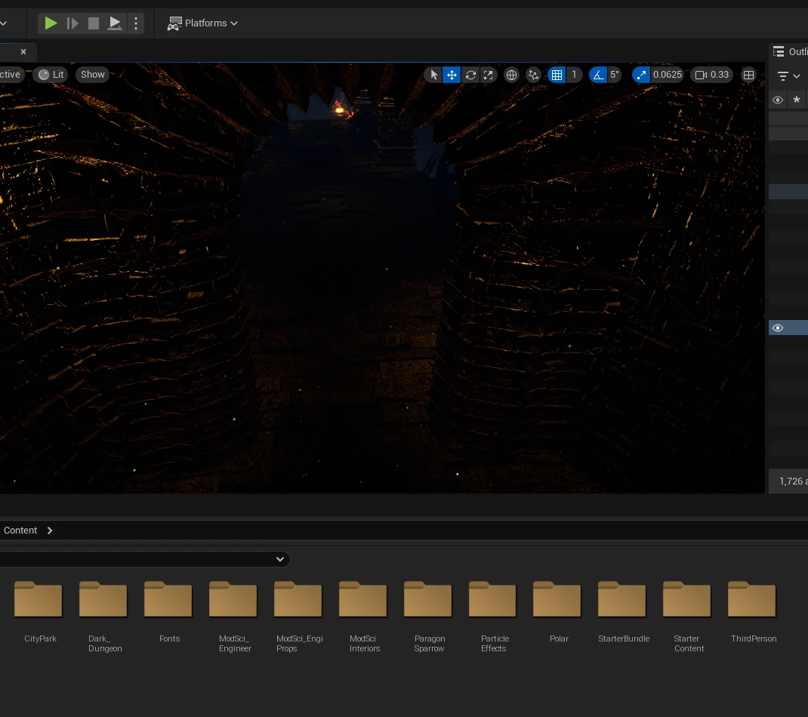
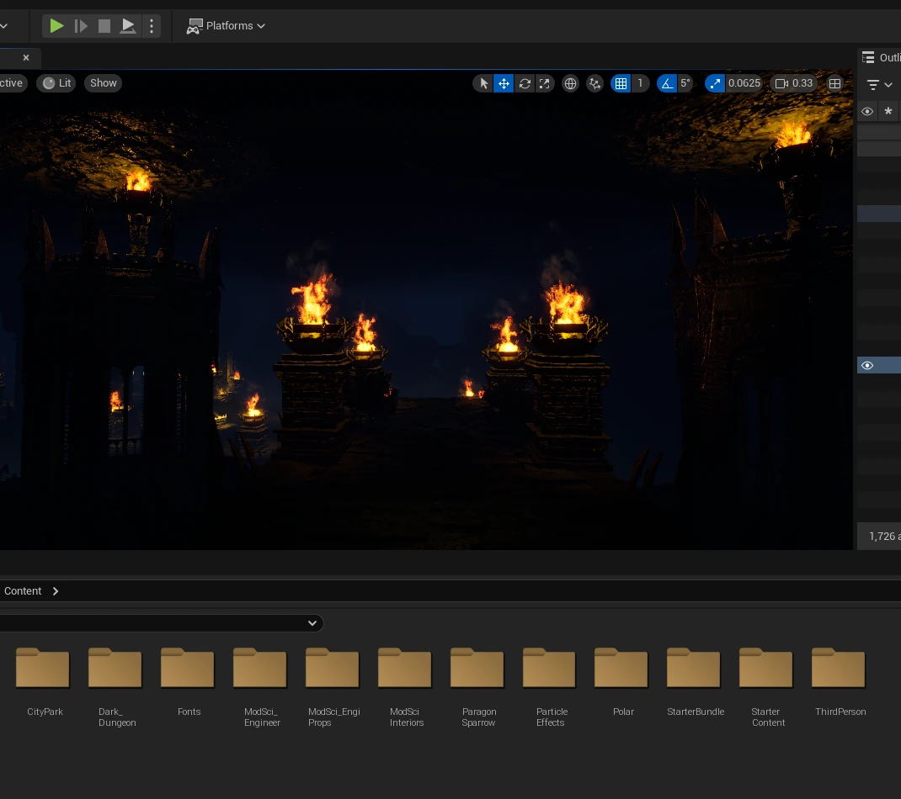
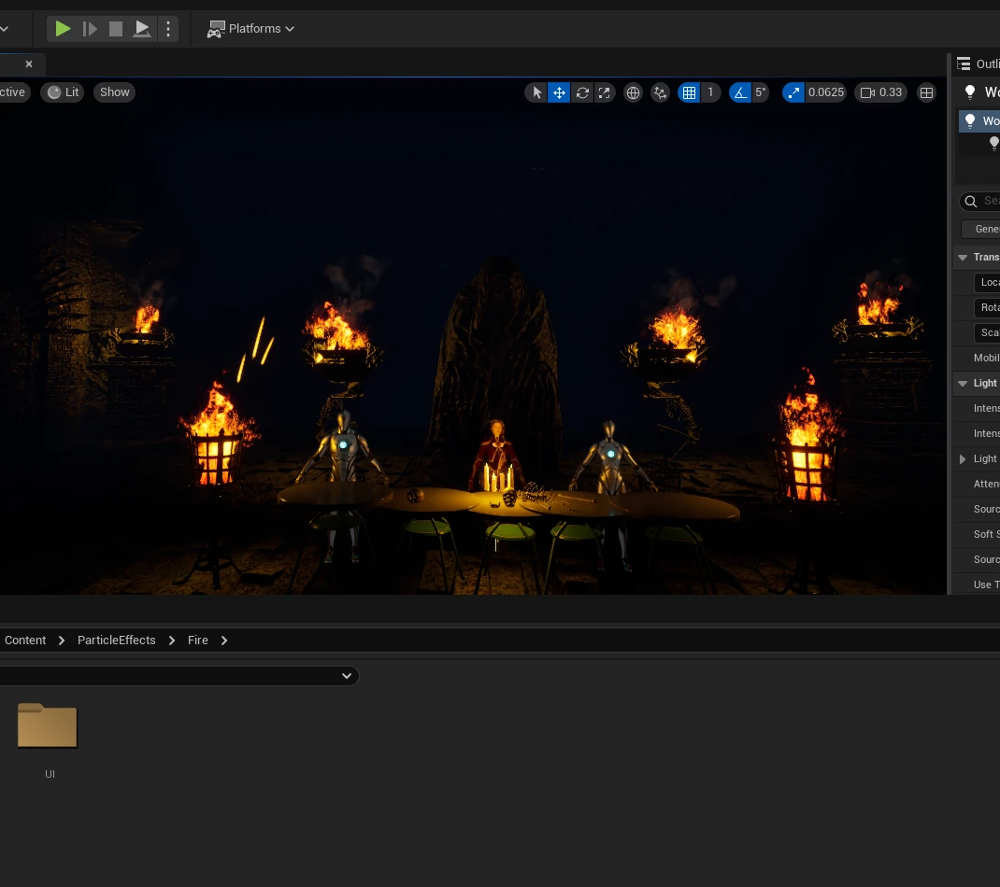
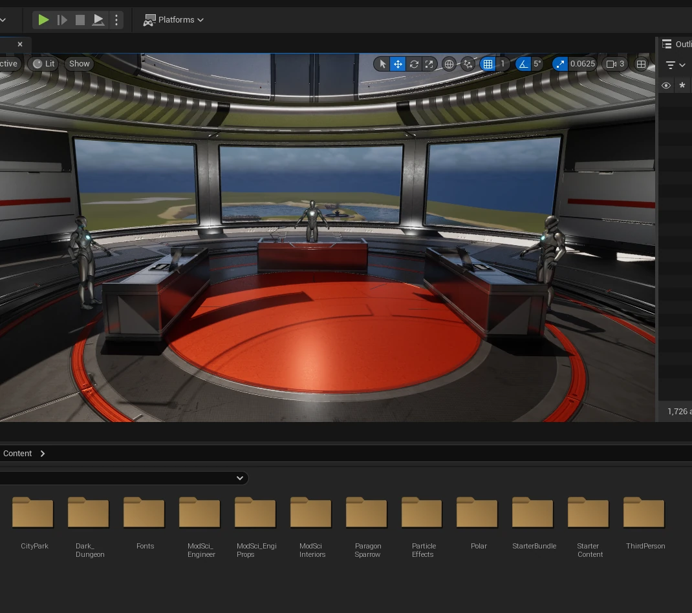
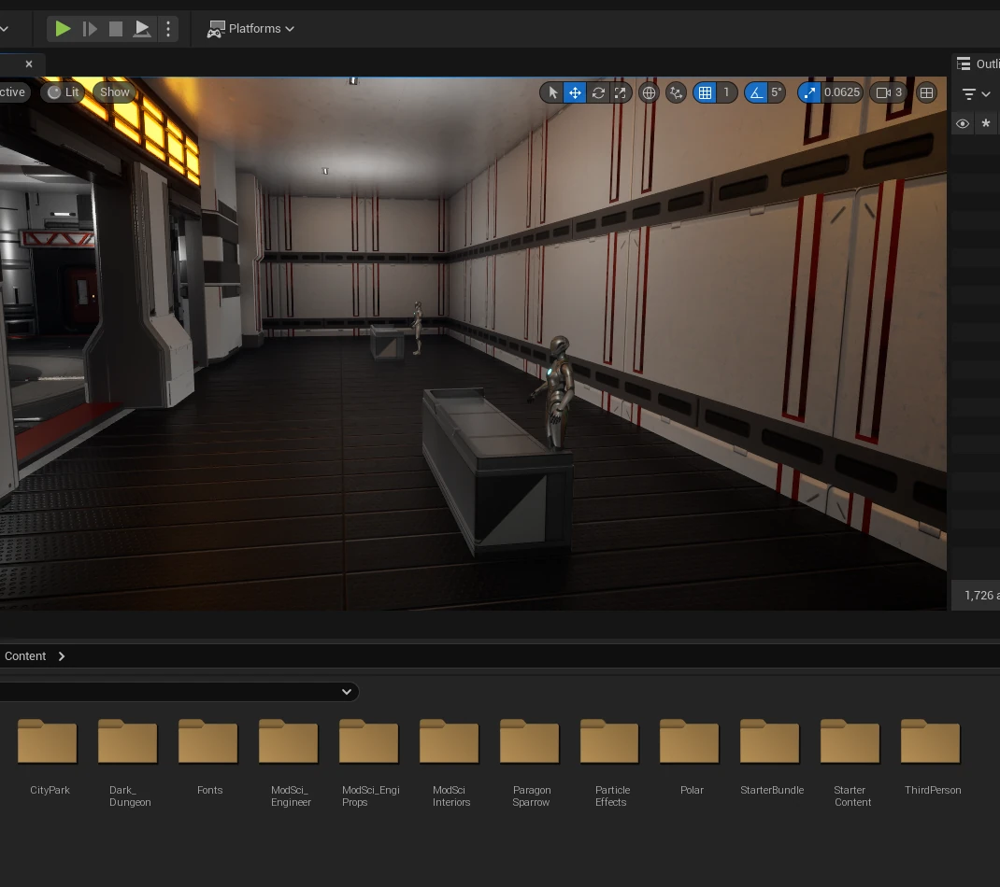
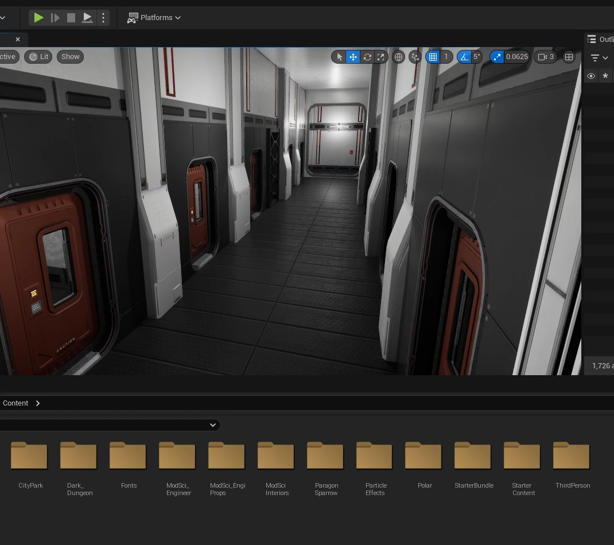
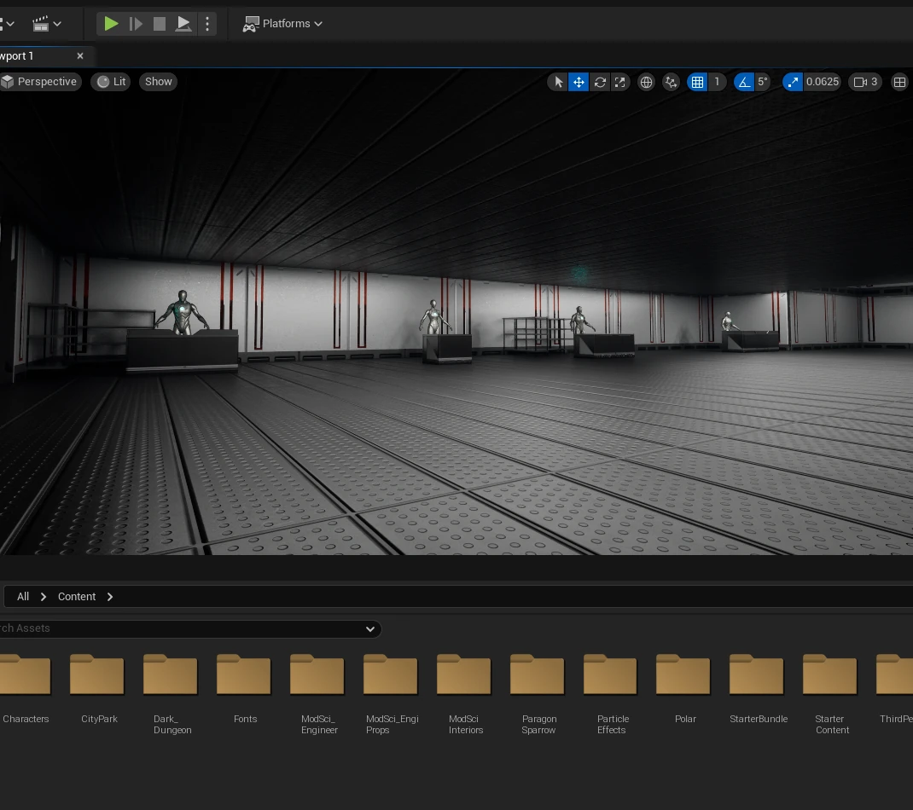

[Teaser]
Beastslayer: Origins Overview
Beastslayer: Origins is a third-person game that blends deep character development, thrilling combat, and rich lore, all set in a universe brimming with mysteries. Players will face difficult choices, test their abilities against the deadliest Beasts, and uncover the secrets that could change the fate of the galaxy. This game is a personal on-going project more work is being done and many placeholders still remain while work continues.
Would you like to know more?You can check out more information below!
Beastslayer: Origins Details
Project Scope and Team Dynamics
I am still working on this project I have been reworking the backend in preparations for UE6.
My Individual Contributions
Design and Systems
If you would like to read my GDD please select the link below.
Beastslayer: Origins GDD on Google DriveAuthored the full Game Design Document



Designed the tunnels for those players who chose the path of the vampire.




Designed the Command Center building with the current place holders.

Designed the books to be used in Beastslayer: Origins Praelum building. After designing numerous books and bookshelves individually I then decided to make a procedural book generator. Shown in another project.

I built the portal in Blender and imported it into Unreal Engine to use throughout the Portal building.
On-Going Development
I designed the teaser video and performed the voice-over using Voice Mod, Unreal Engine, and DaVinci Resolve.